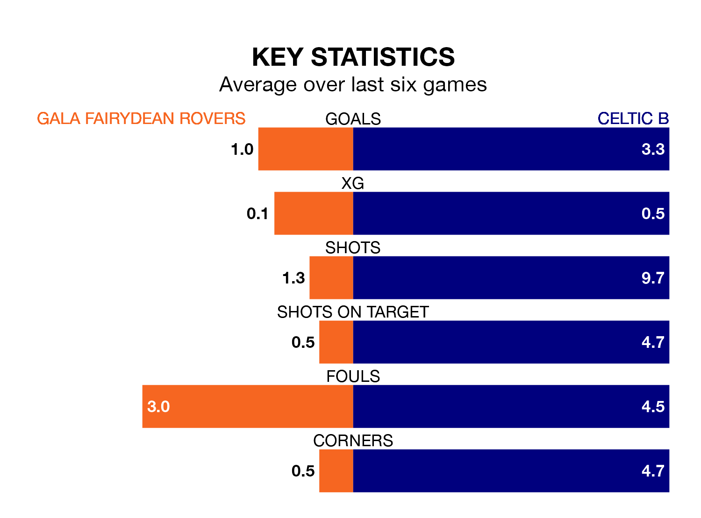

Struggling Gala Fairydean Rovers face Celtic B at the Netherdale Football Ground on Saturday looking to build on a win in their last league outing.
After securing all three points with a 1-0 victory over East Stirlingshire on February 10, Gala Fairydean sit 15th in the Lowland Football League.
They travel to play a Celtic B side eighth in the standings, who also won their last match, 3-1 against Bo'ness United, on February 3.
With 54 goals in 24 games so far this season, Celtic B are the league's third-highest scorers with 2.2 goals per game. And they are conceding fewer than average, letting in 33 goals at a rate of 1.4 per game.
Gala Fairydean, meanwhile, are below average scorers, with 1.3 goals per game, compared to a league average of 1.7. They have conceded 2.5 goals per game.
Rovers are in mixed form in the Lowland Football League, with two wins and a draw from their last six games.
With four wins and two draws over that period, the visitors' form is much better – they have taken 14 points from 18, compared to the home side's seven.
In the last five years, Gala Fairydean and Celtic B have played each other on five occasions. Gala Fairydean won one of them and Celtic B the other.
On average, Gala Fairydean scored 1.6 goals and Celtic B 3.0 in those matches.
Their last meeting was on August 5, when Celtic B won 5-0 at home.
Updated: 13:30 (UTC), 12/02/24